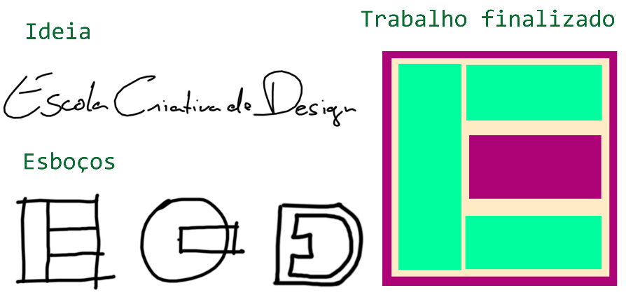

Apesar de existir alguns softwares e aplicativos para tablets que permitem desenhar com caneta e já obter o resultado em formato digital, a maioria dos profissionais de design gráfico não abre mão de criar seus esboços em lápis e papel.
Por mais que haja um costume no setor de iniciar os testes diretamente no programa de criação, o esboço é parte fundamental do processo criativo, seja no desenvolvimento de uma logomarca, de uma pintura ou de um personagem. O esboço algumas vezes pode servir apenas de inspiração e ficar ali no papel para uma breve observação durante o trabalho no computador, ou pode ser digitalizado usando uma impressora scanner ou até mesmo uma câmera, para dentro do software gráfico, nesse caso, o esboço se converterá num bitmap e servirá de base para um processo de redesenho.
Veja abaixo alguns exemplos de esboços à mão e em computador, o esboço à mão serve de inspiração para o início do trabalho no computador.
